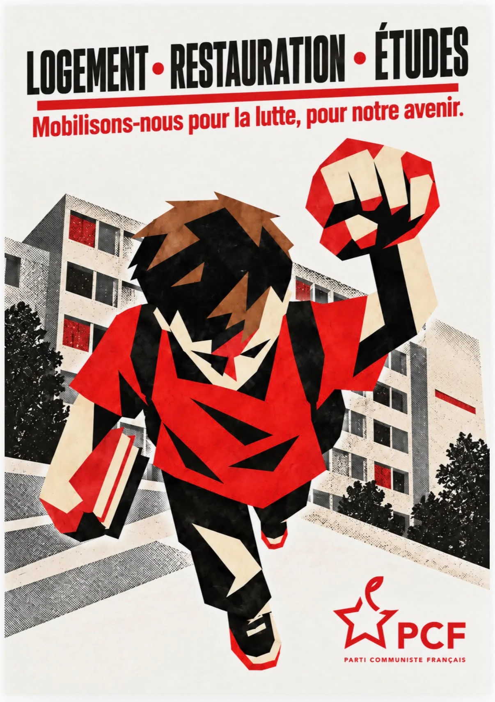

Publication du PCF 79
6 octobre. « La lutte pour les droits, la mobilisation pour l’avenir »
Date indiquée par Facebook · 5 octobre 2026
Texte conservé avec la publication
Le #6octobre c’est la lutte pour les droits, la mobilisation pour l’avenir
Repères éditoriaux
Nous avons porté ces mots à l’occasion du 6 octobre. L’article lié permet de retrouver les revendications et l’appel du Mouvement jeunes communistes de France.

Sources
Archive rouge · export Facebook · AR-0002-FB-00661
À lire aussi · 6 octobre. « Faisons entendre nos revendications ! »